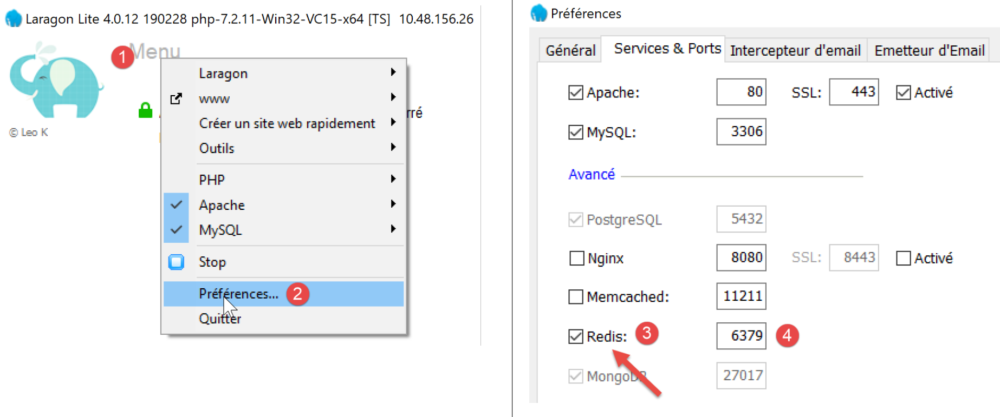
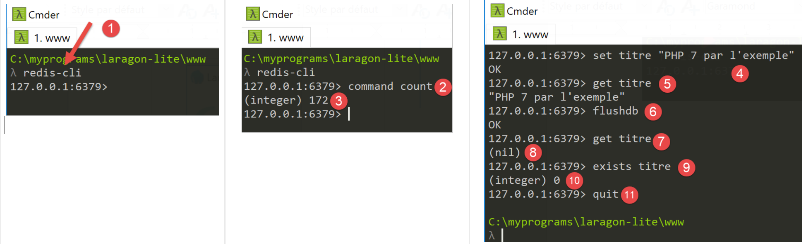
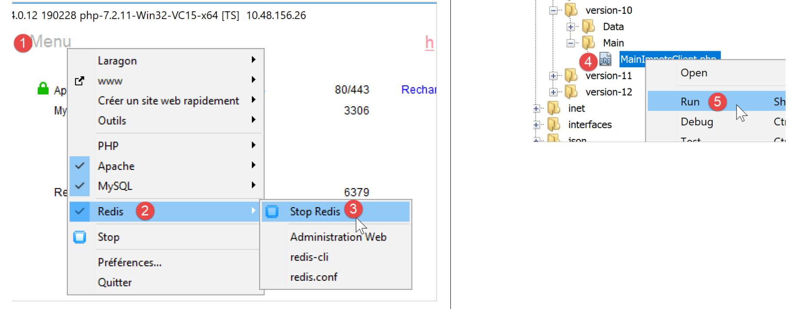
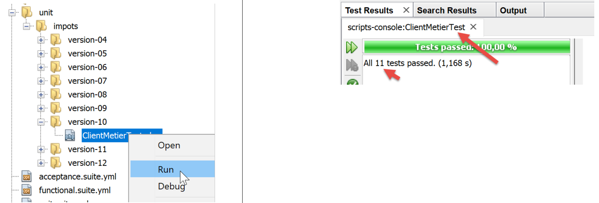
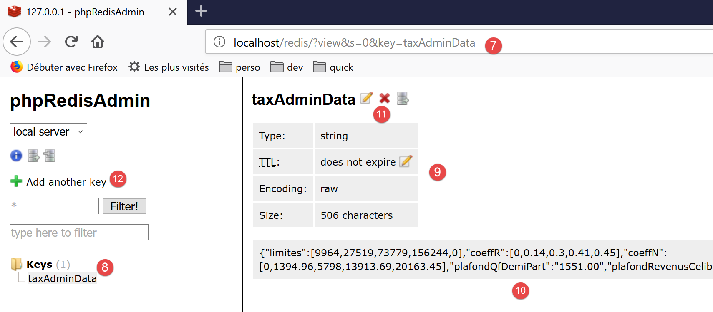

20. تمرين التطبيق – الإصدار 10
أظهر الإصدار السابق أن بيانات الضرائب، التي يتشاركها جميع مستخدمي التطبيق، يجب تخزينها في ذاكرة تخزين مؤقتة في نطاق [Application]. سنستخدم خادم Redis [https://redis.io] لتنفيذ ذلك.
20.1. Redis
سيتم تنفيذ ذاكرة نطاق [التطبيق] بواسطة خادم Redis. وستكون البرامج النصية لـ PHP التي تحتاج إلى ذاكرة التطبيق هذه عملاء لهذا الخادم:

20.2. تثبيت Redis
يأتي Laragon مزودًا بخادم Redis غير ممكّن بشكل افتراضي. لذلك يجب أن تبدأ بتمكينه:

- في [3]، قم بتمكين خادم [Redis]؛
- في [4]، اترك المنفذ [6379] كإعداد افتراضي يستخدمه عملاء Redis؛
يتم إعادة تشغيل خدمات Laragon تلقائيًا بعد تمكين Redis:

20.3. عميل Redis في وضع الأوامر
يمكن الاستعلام عن خادم Redis في وضع الأوامر. افتح محطة Laragon (انظر قسم الروابط):

- في [1]، يقوم الأمر [redis-cli] بتشغيل العميل في وضع الأوامر لخادم Redis؛
اعتبارًا من يوليو 2019، يدعم عميل Redis 172 أمرًا للتفاعل مع الخادم [https://redis.io/commands#list]. أحد هذه الأوامر [command count] [2] يعرض هذا الرقم [3].
سنغطي فقط تلك التي نحتاجها لتطبيق PHP الخاص بنا. سنستخدم Redis لغرض واحد: تخزين مصفوفة [‘attribute’=>’value’] في ذاكرة Redis. يتم ذلك باستخدام أمر Redis [set attribute value] [4]. يمكن بعد ذلك استرداد القيمة باستخدام الأمر [get attribute] [5]. هذا كل ما سنحتاجه.
قد يكون من الضروري مسح ذاكرة Redis. يتم ذلك باستخدام الأمر [flushdb] [6]. بعد ذلك، إذا استعلمنا عن قيمة السمة [title] [7]، فسنحصل على مرجع [nil] [8] يشير إلى عدم العثور على السمة. يمكننا أيضًا استخدام الأمر [exists] [9-10] للتحقق من وجود السمة.
للخروج من عميل Redis، اكتب الأمر [quit] [11].
20.4. تثبيت عميل Redis لـ PHP
نحتاج الآن إلى تثبيت عميل Redis لـ PHP:

هناك العديد من المكتبات التي تنفذ عميل Redis. سنستخدم مكتبة [Predis] [https://github.com/nrk/predis] (يوليو 2019). مثل المكتبات السابقة، يتم تثبيت هذه المكتبة باستخدام [composer] في محطة Laragon:

20.5. كود الخادم

يتغير ملف التكوين [config-server.json] على النحو التالي:
{
"rootDirectory": "C:/myprograms/laragon-lite/www/php7/scripts-web/impots/version-10",
"databaseFilename": "Data/database.json",
"relativeDependencies": [
"/../version-08/Entities/BaseEntity.php",
"/../version-08/Entities/ExceptionImpots.php",
"/../version-08/Entities/TaxAdminData.php",
"/../version-08/Entities/Database.php",
"/../version-08/Dao/InterfaceServerDao.php",
"/../version-08/Dao/ServerDao.php",
"/../version-09/Dao/ServerDaoWithSession.php",
"/../version-08/Métier/InterfaceServerMetier.php",
"/../version-08/Métier/ServerMetier.php",
"/../version-09/Utilities/Logger.php",
"/../version-09/Utilities/SendAdminMail.php"
],
"absoluteDependencies": [
"C:/myprograms/laragon-lite/www/vendor/autoload.php",
"C:/myprograms/laragon-lite/www/vendor/predis/predis/autoload.php"
],
"users": [
{
"login": "admin",
"passwd": "admin"
}
],
"adminMail": {
"smtp-server": "localhost",
"smtp-port": "25",
"from": "guest@localhost",
"to": "guest@localhost",
"subject": "plantage du serveur de calcul d'impôts",
"tls": "FALSE",
"attachments": []
},
"logsFilename": "Data/logs.txt"
}
تعليقات
- الأسطر 5–15: لا يقدم الإصدار 10 أي شيء جديد باستثناء البرنامج النصي [impots-server.php]. فهو يستخدم عناصر من الإصدارين 08 و 09؛
- السطر 19: تبعيات مطلوبة لمكتبة [predis] التي قمنا بتثبيتها للتو؛
يتغير كود الخادم [impots-server.php] على النحو التالي:
<?php
// strict adherence to declared types of function parameters
declare (strict_types=1);
// namespace
namespace Application;
// error handling by PHP
ini_set("display_errors", "0");
//
// configuration file path
define("CONFIG_FILENAME", "Data/config-server.json");
// class alias
use \Application\ServerDaoWithSession as ServerDaoWithRedis;
// session
$session = new Session();
$session->start();
…
…
// 1st log
$logger->write("\n---nouvelle requête\n");
// retrieve the current query
$request = Request::createFromGlobals();
// authentication only the 1st time
if (!$session->has("user")) {
…
} else {
// log
$logger->write("Authentification prise en session…\n");
}
// we have a valid user - we check the parameters received
$erreurs = [];
// you need three parameters GET
$method = strtolower($request->getMethod());
…
// mistakes?
if ($erreurs) {
// an error code 400 HTTP_BAD_REQUEST is sent to the customer
sendResponse($response, ["erreurs" => $erreurs], Response::HTTP_BAD_REQUEST, [], $logger);
// completed
exit;
} else {
// logs
$logger->write("paramètres ['marié'=>$marié, 'enfants'=>$enfants, 'salaire'=>$salaire] valides\n");
}
// we've got everything you need to work
// Redis
\Predis\Autoloader::register();
try {
// customer [predis]
$redis = new \Predis\Client();
// connect to the server to see if it's there
$redis->connect();
} catch (\Predis\Connection\ConnectionException $ex) {
// internal server error
doInternalServerError("[redis], " . utf8_encode($ex->getMessage()), $response, $config['adminMail'], $logger);
// completed
exit;
}
// creation of the [dao] layer
if (!$redis->get("taxAdminData")) {
// tax data is taken from the database
$logger->write("données fiscales prises en base de données\n");
try {
// construction of the [dao] layer
$dao = new ServerDaoWithRedis($config["databaseFilename"], NULL);
// put tax data in scope memory [application]
// method [TaxAdminData]->__toString will be called implicitly
$redis->set("taxAdminData", $dao->getTaxAdminData());
} catch (\RuntimeException $ex) {
// we note the error
doInternalServerError("[dao], " . utf8_encode($ex->getMessage()), $response, $config['adminMail'], $logger, $redis);
// completed
exit;
}
} else {
// tax data are taken from the [application] scope memory
$arrayOfAttributes = \json_decode($redis->get("taxAdminData"), true);
$taxAdminData = (new TaxAdminData())->setFromArrayOfAttributes($arrayOfAttributes);
// istanciation of the [dao] layer
$dao = new ServerDaoWithRedis(NULL, $taxAdminData);
// logs
$logger->write("données fiscales prises dans redis\n");
}
// creation of the [business] layer
$métier = new ServerMetier($dao);
// tAX CALCULATION
$result = $métier->calculerImpot($marié, (int) $enfants, (int) $salaire);
// we return the answer
sendResponse($response, $result, Response::HTTP_OK, [], $logger, $redis);
// end
exit;
function doInternalServerError(string $message, Response $response, array $infos,
Logger $logger = NULL, \Predis\Client $predisClient = NULL) {
// $message: error message
// $response : answer HTTP
// $infos: information table for sending mail
// $result: results table
// $logger: application logger
// $predisClient: a customer [predis]
//
// send an e-mail to the administrator
// SendAdminMail intercepts all exceptions and logs them itself
$infos['message'] = $message;
$sendAdminMail = new SendAdminMail($infos, $logger);
$sendAdminMail->send();
// an error code 500 is sent to the customer
sendResponse($response, ["erreur" => $message], Response::HTTP_INTERNAL_SERVER_ERROR, [], $logger, $predisClient);
}
// function to send HTTP response to client
function sendResponse(Response $response, array $result, int $statusCode,
array $headers, Logger $logger = NULL, \Predis\Client $predisClient = NULL) {
// $response : answer HTTP
// $result: results table
// $statusCode: HTTP response status
// $headers: HTTP headers to be included in the response
// $logger: application logger
// $predisClient: a customer [predis]
//
// status HTTTP
$response->setStatusCode($statusCode);
// body
$body = \json_encode(["réponse" => $result], JSON_UNESCAPED_UNICODE);
$response->setContent($body);
// headers
$response->headers->add($headers);
// shipping
$response->send();
// log
if ($logger != NULL) {
$logger->write("$body\n");
$logger->close();
}
// close connection [redis]
if ($predisClient != NULL) {
$predisClient->disconnect();
}
}
تعليقات
- السطر 15: نمنح الاسم المستعار [ServerDaoWithRedis] للفئة [\Application\ServerDaoWithSession] لتعكس التغيير في تنفيذ البرنامج النصي للخادم؛
- السطران 18-19: يتم الحفاظ على الجلسة. هنا، علينا أن نضع في اعتبارنا معلومتين:
- حقيقة أن المستخدم قد أتم المصادقة بنجاح. هذه المعلومة لها نطاق [session]: فهي مرتبطة بمستخدم معين وليست صالحة للمستخدمين الآخرين؛
- بيانات إدارة الضرائب. هذه المعلومات لها نطاق [application]: فهي غير مرتبطة بمستخدم معين ولكنها تنطبق على جميع المستخدمين؛
- الأسطر 54–64: إنشاء عميل [redis] الذي سيتواصل مع خادم [redis]. سيتواصل هذا العميل مع المنفذ الافتراضي للخادم. إذا كان الخادم لا يتواصل عبر منفذه الافتراضي أو إذا لم يكن موجودًا على جهاز [localhost]، فسيتعين تمرير هذه المعلومات إلى مُنشئ فئة [\Predis\Client]؛
- السطر 59: يتم توصيل العميل بالخادم على الفور للتحقق مما إذا كان يستجيب أم لا؛
- الأسطر 60–65: إذا فشل الاتصال بخادم Redis، يتم إرسال استجابة خطأ إلى العميل وإرسال بريد إلكتروني إلى مسؤول التطبيق؛
- السطر 67: نستعلم خادم [redis] عن المفتاح [taxAdminData]. إذا لم يتم العثور عليه، يتم استرداد بيانات الضرائب من قاعدة البيانات (السطر 72)؛
- السطر 75: يتم تخزين المفتاح [taxAdminData] في ذاكرة [redis] مع سلسلة JSON للمتغير [$taxAdminData]، وهو كائن من النوع [TaxAdminData]. تتوقع طريقة [$redis→set] سلسلة لقيمة المفتاح. وبالتالي، ستحاول تحويل كائن [TaxAdminData] إلى نوع [string]. وهذا يستدعي ضمنيًا طريقة [TaxAdminData->__toString]، التي تنتج سلسلة JSON لكائن [TaxAdminData]؛
- السطر 84: المفتاح [taxAdminData] موجود في ذاكرة [redis]، لذا نسترد قيمته. ونعلم أن هذه هي سلسلة JSON لكائن [TaxAdminData]. ثم نقوم بتحليلها للحصول على مصفوفة من السمات؛
- السطر 85: من هذه المصفوفة، يتم إنشاء مثيل لكائن [TaxAdminData] جديد؛
- السطر 87: يتم إنشاء مثيل لطبقة [dao]؛
20.6. كود العميل

الإصدار 10 من العميل مطابق للإصدار 9. التغيير الوحيد هو في ملف التكوين [config-client.json]:
{
"rootDirectory": "C:/Data/st-2019/dev/php7/poly/scripts-console/impots/version-10",
"taxPayersDataFileName": "Data/taxpayersdata.json",
"resultsFileName": "Data/results.json",
"errorsFileName": "Data/errors.json",
"dependencies": [
"/../version-08/Entities/BaseEntity.php",
"/../version-08/Entities/TaxPayerData.php",
"/../version-08/Entities/ExceptionImpots.php",
"/../version-08/Utilities/Utilitaires.php",
"/../version-08/Dao/InterfaceClientDao.php",
"/../version-08/Dao/TraitDao.php",
"/../version-09/Dao/ClientDao.php",
"/../version-08/Métier/InterfaceClientMetier.php",
"/../version-08/Métier/ClientMetier.php"
],
"absoluteDependencies": [
"C:/myprograms/laragon-lite/www/vendor/autoload.php"
],
"user": {
"login": "admin",
"passwd": "admin"
},
"urlServer": "https://localhost:443/php7/scripts-web/impots/version-10/impots-server.php"
}
التغيير الوحيد هو عنوان URL للخادم في السطر 24.
النتائج هي نفسها كما في الإصدار 09. دعونا نختبر حالة خطأ جديدة:

والنتيجة في وحدة التحكم هي كما يلي:
L'erreur suivante s'est produite : {"statut HTTP":500,"erreur":"[redis], Aucune connexion n’a pu être établie car l’ordinateur cible l’a expressément refusée. [tcp:\/\/127.0.0.1:6379]"}
Terminé
20.7. [Codeception] اختبارات العميل

فئة الاختبار [ClientMetierTest] في الإصدار 10 مطابقة لتلك الموجودة في الإصدار 09 باستثناء واحد:
<?php
// strict adherence to declared types of function parameters
declare (strict_types=1);
// namespace
namespace Application;
// definition of constants
define("ROOT", "C:/Data/st-2019/dev/php7/poly/scripts-console/impots/version-10");
…
}
- السطر 10: بيئة الاختبار هي بيئة عميل الإصدار 10؛
قبل بدء الاختبارات، دعونا نستخدم عميل [redis-cli] لحذف المفتاح [taxAdminData] من ذاكرة خادم [redis]:

الآن، دعونا نجري الاختبار:

الآن دعونا نفحص سجلات الخادم [logs.txt]:
05/07/19 08:52:16:396 :
---nouvelle requête
05/07/19 08:52:16:403 : Autentification en cours…
05/07/19 08:52:16:403 : Authentification réussie [admin, admin]
05/07/19 08:52:16:403 : paramètres ['marié'=>oui, 'enfants'=>2, 'salaire'=>55555] valides
05/07/19 08:52:16:407 : données fiscales prises en base de données
05/07/19 08:52:16:420 : {"réponse":{"impôt":2814,"surcôte":0,"décôte":0,"réduction":0,"taux":0.14}}
05/07/19 08:52:16:546 :
---nouvelle requête
05/07/19 08:52:16:555 : Autentification en cours…
05/07/19 08:52:16:555 : Authentification réussie [admin, admin]
05/07/19 08:52:16:556 : paramètres ['marié'=>oui, 'enfants'=>2, 'salaire'=>50000] valides
05/07/19 08:52:16:559 : données fiscales prises dans redis
05/07/19 08:52:16:559 : {"réponse":{"impôt":1384,"surcôte":0,"décôte":384,"réduction":347,"taux":0.14}}
05/07/19 08:52:16:668 :
---nouvelle requête
05/07/19 08:52:16:675 : Autentification en cours…
05/07/19 08:52:16:675 : Authentification réussie [admin, admin]
05/07/19 08:52:16:675 : paramètres ['marié'=>oui, 'enfants'=>3, 'salaire'=>50000] valides
05/07/19 08:52:16:678 : données fiscales prises dans redis
05/07/19 08:52:16:678 : {"réponse":{"impôt":0,"surcôte":0,"décôte":720,"réduction":0,"taux":0.14}}
05/07/19 08:52:16:776 :
---nouvelle requête
…
لقد ذكرنا سابقًا أنه في كل اختبار، يتم إعادة تنفيذ منشئ فئة الاختبار، مما يعني أن فئة [ClientDao] قيد الاختبار يتم إنشاء مثيل لها باستخدام ملف تعريف ارتباط جلسة غير موجود لكل اختبار. وبالتالي، تسير الأمور كما لو أن الاختبارات الـ 11 تمثل 11 مستخدمًا مختلفًا، مع 11 جلسة مختلفة.
- السطر 6: يتم استرداد بيانات الضرائب من قاعدة البيانات؛
- السطران 13 و20: يتم استرداد بيانات الضرائب من ذاكرة [Redis]. وبالتالي، لدينا ذاكرة بنطاق [التطبيق] مشتركة بين جميع مستخدمي التطبيق؛
20.8. واجهة الويب لخادم [Redis]
لقد رأينا أن خادم [Redis] يمكن إدارته في وضع الأوامر. كما يمكن إدارته عبر واجهة ويب:

- في [4]، عنوان URL الخاص بالإدارة؛
- في [5]، المفاتيح المخزنة بواسطة الخادم؛
- في [6]، حالة الخادم الحالية؛
بالنقر على [5]، يمكنك عرض معلومات حول مفتاح [taxAdminData]:

- في [7]، عنوان URL الذي يتيح الوصول إلى المعلومات الخاصة بمفتاح [taxAdminData] [8]؛
- في [9]، حالة المفتاح؛
- في [10]، قيمته: يمكنك التعرف على سلسلة JSON لكائن [TaxAdminData]؛
- في [11]، يمكنك حذف المفتاح؛
- في [12]، يمكنك إضافة مفتاح آخر؛